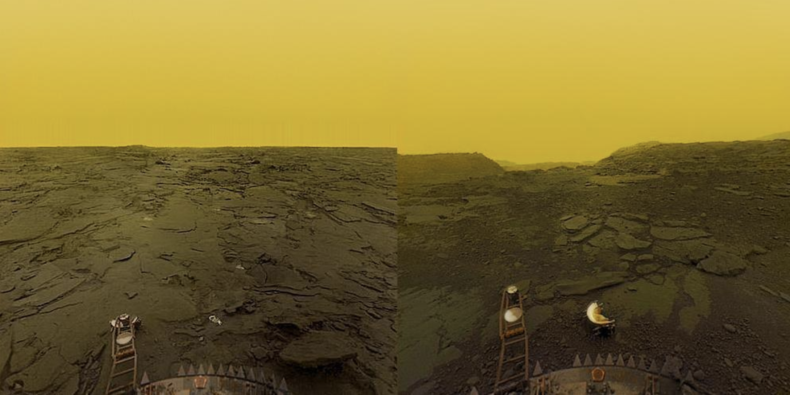
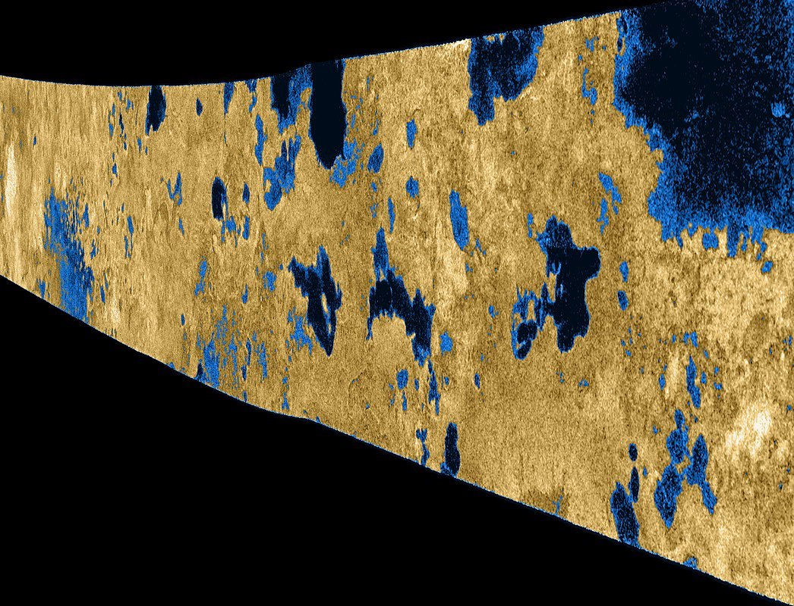

The search for extraterrestrial life in the Solar System And why we probably won't find it anytime soon
Written by jw021, 2/10/2021, 1:15:01
Much of humanity’s search for extraterrestrial life in the Solar System has been plagued with disappointment. Discovery after discovery, science fiction and science fact seemed to diverge. Humanity’s hopes for a vibrant, life-filled universe of aliens were squashed by the dark, empty, and vast universe in which we found ourselves. Venus was once thought to have a pleasant, tropical Earth-like climate. Perhaps standing on its surface would be like breathing in a fresh breath of Floridian air. In C.S. Lewis’ novel Perelandra, Venus is an ocean paradise dotted with floating islands and teaming with life.

Reality is often disappointing. The real Venus turned out to be quite the opposite, with atmospheric pressures hundreds of times greater than those on Earth, and a temperature hot enough to melt lead. The Russian Venera landers sent back images of a scorched hellscape, before succumbing to the immense conditions of the Venusian climate. The goddess of beauty, it seemed, was quite the opposite upon closer inspection.
Mars was not much better. Perhaps the many lines across its surface were canals (a word misinterpreted in translation) dug by extraterrestrial beings, as many enthusiasts speculated. Mars was subject to much exposure in science fiction before any probes were sent. There was much public interest for what lied on the Red Planet. To everyone’s surprise, it ended up being Red. Lots of Red. Mars had a dry, cold landscape dominated by rust. Mars, like Antarctica, was a cold desert. It was also just as interesting.
However, the aging Martian landscape told a story of a world once filled with water. A warm, wet planet similar to Earth, whose conditions for life faded around the time those on Earth began. Venus tells a similar story. Under the thick, cloudy atmosphere is a landscape that was likely once dominated by oceans and a pleasant tropical climate, a world similar to the one imagined by Lewis. Life could very well have existed on this planet. However, the hand of God can be cruel.
As the reality of Mars set in, the frontier for extraterrestrial life changed to the moons of Jupiter and Saturn. In particular Callisto, Enceladus, Europa, Ganymede, Triton, and Titan. With the exception of the last moon Titan, all of these are thought to have underwater oceans, concealed by their icy crust. A mission to any of these would provide great insight into how these hidden water-worlds function, but probably wouldn’t reveal anything else interesting. Life has had a chance to reveal itself five different times on these words, in five separate similar environments. It hasn’t, and never will, because there is none to be found.
How far will ours expand until we come to grips with reality? Perhaps it will take a mission to each one of them, which has already happened with Saturn’s moon Titan. Titan, whose surface is dotted with numerous methane lakes, has shown no proof of life thus far. The Cassini-Huygens mission was perhaps the most interesting mission of its type, and the data it returned was beautiful. It painted a picture of a beautiful, natural, wondrous landscape, albeit devoid of life. If there was any life like ours in the solar system, it would’ve been made apparent to us long ago. As far as we know, there is as much life on the surface of Titan as there is in the core of the Sun.

Perhaps we are simply looking in the wrong places, or in the wrong ways. Our only example of life is here on Earth. Thus, it would make sense that our assumptions for extraterrestrial life are very Earth-centric. This Earth-centricity will be something we’ll never be able to shake off, until extraterrestrial life is found. Extraterrestrial life could be drastically different than what we predict it to be, so much that we could gloss over it. The search for conditions similar to those of Earth is a search in vain. We look for liquid water, oxygen, or phosphene. Rarely do we consider that extraterrestrial life could depend on entirely different things. Unless we somehow throw off our Earth-centric shackles, we will likely never find life similar to ours, much less in our own Solar System.
Perhaps we are part of some larger organism that spans the cosmos. Perhaps we are the only one of our kind in the Universe (which is very unlikely). Perhaps we need not explore, if we acquire enough data to simulate the evolution of the Universe since the Big Bang, and will thus never have to leave the comfort of our home planet. This expands into another topic I might write about.
Page generated . Last updated 1/22/2021, 10:06:15 by jw021. Home